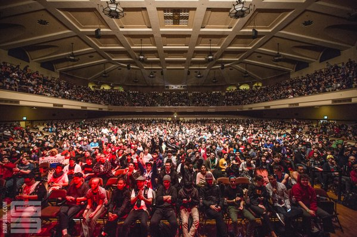
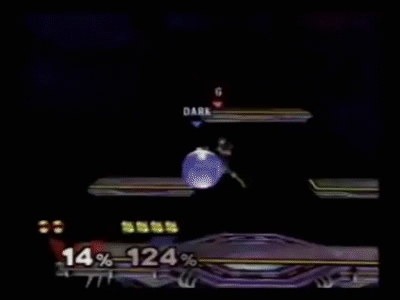

What is Super Smash Bros. Melee?
Super Smash Bros. Melee is a fighting game consisting of characters from various franchises made by Nintendo.
However, Super Smash Bros. is a bit different than other fighting games. While most fighting games' objective is to deplete the opponent's life gauge, Super Smash Bros.' objective is to blast them off of the stage to the point of no return. However, the gameplay alone is not the reason why I find so much interest in it.
What makes this game interesting is that Super Smash Bros. Melee is the 2nd game of 4 in the franchise. It was released in the year of 2001.
So why does a game that was made 15 years ago get crowds like this?
The picture above is the crowd at a Super Smash Bros. Tournament called "Genesis 3"
There are many reasons that explain why Melee is so popular. One reason is that the game is a fun, party-type game where friends would play to have a relaxing time. But the most glaring reason is that the community slowly recognized hidden mechanics in the game which gave players who knew how to utilize these mechanics to have a distinct edge over other players. As time went on, more and more of these hidden mechanics were found which allowed players to play at an amazingly high level. Basically, the game went from this:

to this:
As you can see, the difference in both the gameplay and the number of inputs when utilizing these mechanics is vastly different than what it is without.
Of course, with so many people learning these mechanics and getting better, the community wanted to know who was the best. Thus, the Super Smash Bros. competitve scene was born. Personally, the high paced gameplay makes Super Smash Bros. Melee my favorite E-Sport to spectate. Even though the scene suffers from lack of recognition by Nintendo, the competitive scene is still going strong with the number of tournaments and attendees increasing almost exponentially year by year. The community even made a 4 hour documentary about the history of the Melee competitive scene and its growth! The way it is going now, there is no doubt in my mind that Melee has the potential to be a leading E-Sport.
As many say, whatever happened to Super Smash Bros. Melee was a beautiful accident.